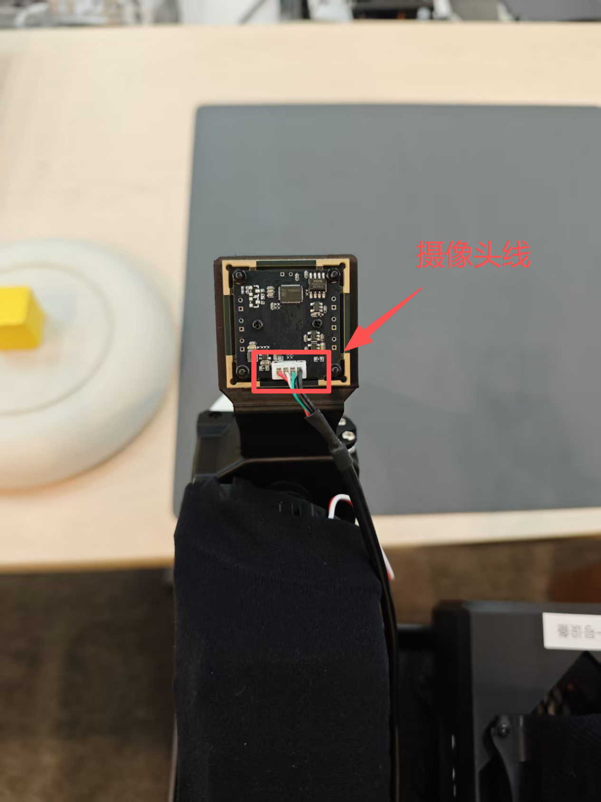
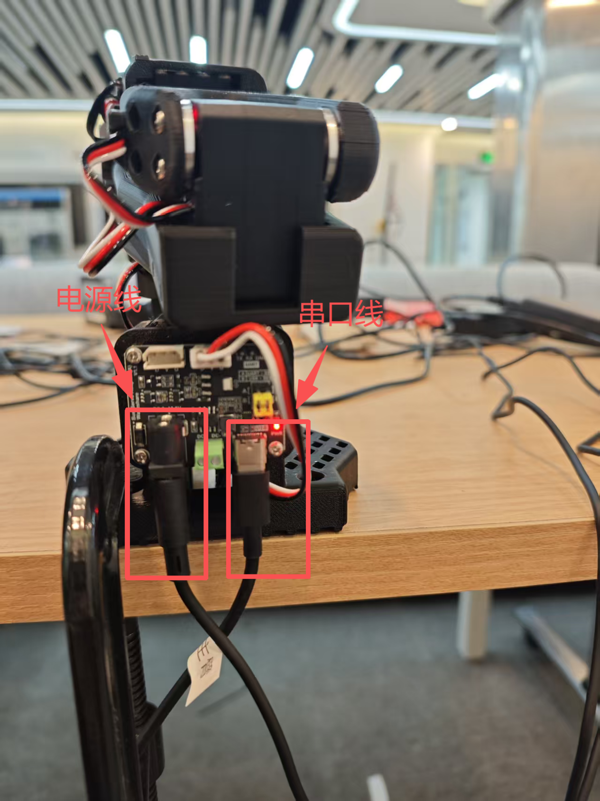
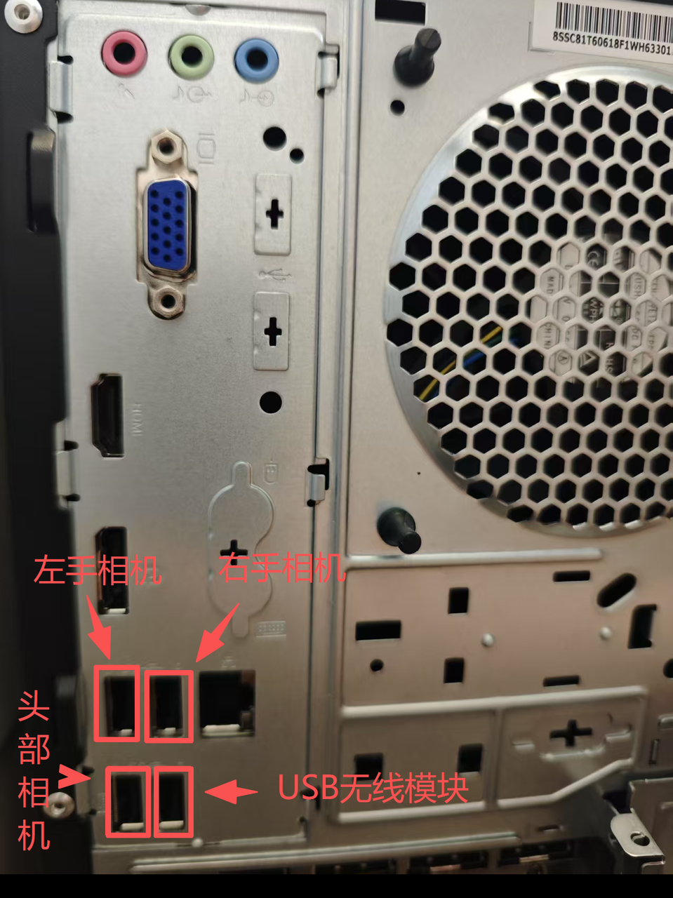
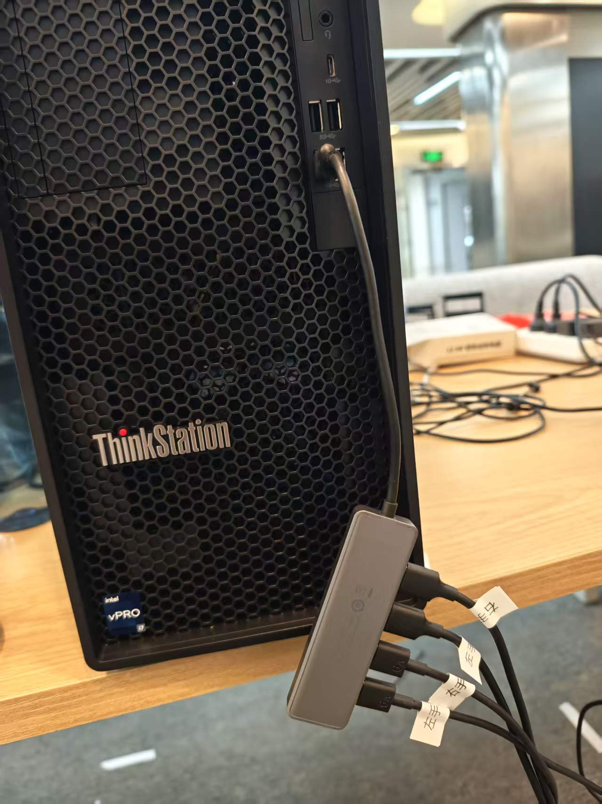
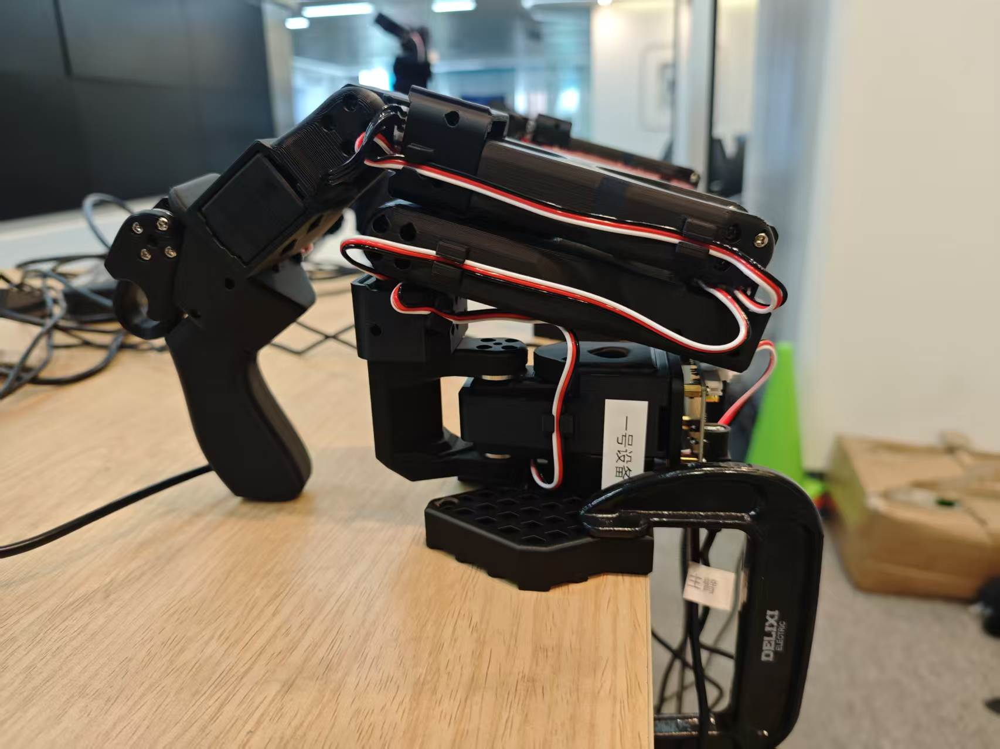
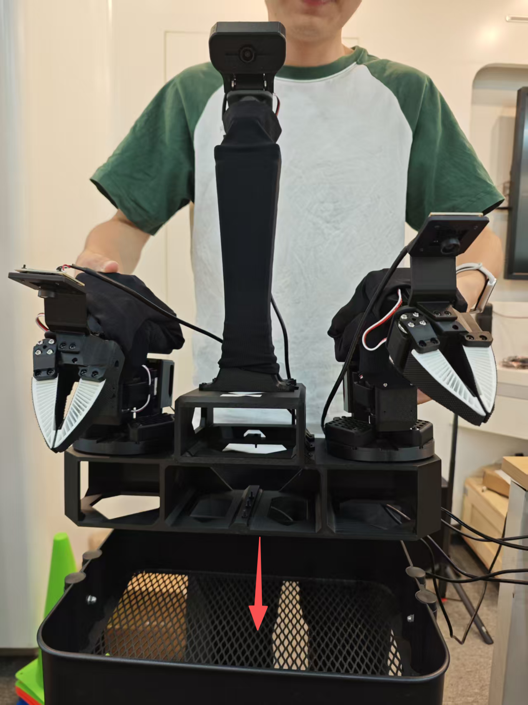
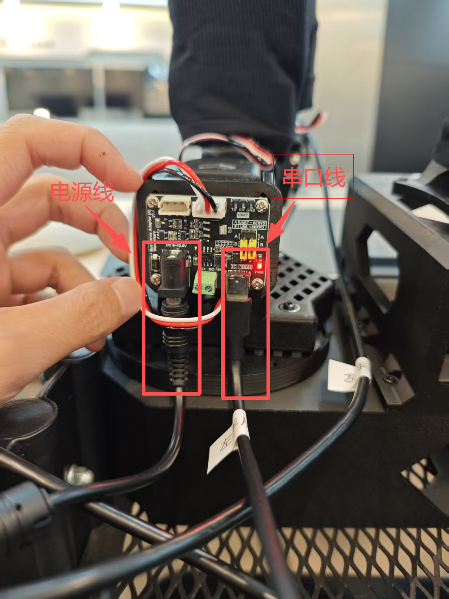

机械臂硬件组装与串口识别
本课是全课的视频重点课：9 段指导视频覆盖主臂安装、从臂安装、设置电机编号、Gripper 与 Joint1~Joint5 逐关节上臂全过程。你将把主臂卡钳夹紧桌面、从臂卡上小推车，接对 5V/12V 两路电源与串口线，再用 lerobot-find-port 找到每条臂的端口并落成永久别名——这是"从零件到能被软件认出来的机械臂"最关键的一步。
00课程节奏：五星学习法 · 8 段微课（每段 ≤ 15 min）
本实验按五星学习法组织：先用一个真实装配故障聚焦问题，再激活旧知（串口通信与电源极性），接着示证新知（六关节结构 + 爆炸图），然后跟着 9 段视频应用新知完成逐关节装配与 find-port 找口，最后借排障与拓展融会贯通。全程切成 8 段微课、每段不超过 15 分钟，段间停顿 1~2 分钟消化；纯讲授合计约 100 分钟，其余课时用于动手实操装配与个别辅导。
| 课段 | 五星阶段 | 时长 | 对应章节 | 本段任务 |
|---|---|---|---|---|
| 课段 1 | 聚焦问题 | 12 min | §01 + §02 前半 | 抛出"通电冒烟"与"编号错位致反向动"两个现场故障，明确装配纪律 |
| 课段 2 | 激活旧知 | 8 min | §02 后半 | 串口通信·电源极性·USB 枚举旧知，衔接 EXP-01 的 udev 别名 |
| 课段 3 | 示证新知 | 15 min | §03 | 对照实物认识主臂/从臂/摄像头，区分 5V 与 12V 供电 |
| 课段 4 | 示证新知 | 12 min | §06 | 六关节爆炸图动画，理解 shoulder→gripper 逐级装配逻辑 |
| 课段 5 | 应用新知 | 15 min | §04 步骤1~3 + 视频①②③ | 主臂上桌、从臂上车、设置电机编号（边看视频边动手） |
| 课段 6 | 应用新知 | 15 min | §04 步骤4~5 + 视频④~⑨ + §05 | Gripper→Joint5 逐关节上臂，find-port 找口核对别名 |
| 课段 7 | 应用新知 | 10 min | §07 | 装配顺序点击排序自测，全对方可进入下一实验 |
| 课段 8 | 融会贯通 | 13 min | §08~§10 | 排障口诀收口，挑战题与思考题拔高迁移 |
讲课提示：课段 1/2 以讲授 + 提问为主；课段 3~4 用实物 + 动画；课段 5~6 边看视频边装配（每段视频后暂停让学员动手）；课段 7 学员独立完成；课段 8 答疑拔高。段间停顿 1~2 分钟。
01学习目标课段 1 · 聚焦问题 · 12 min
- 能区分主臂与从臂的安装方式与供电规格：主臂 5V 2A 固定桌面、从臂 12V 8A 卡小推车
- 能按 9 段视频独立完成 设置电机编号 → Joint1~5 / Gripper 逐关节装配
- 能说出六关节的英文名与中文含义：shoulder_pan / shoulder_lift / elbow_flex / wrist_flex / wrist_roll / gripper
- 能执行"先接电源、后插 USB"的正确插拔顺序与
lerobot-find-port找口流程 - 能用
udevadm info核对 ID_SERIAL_SHORT 并确认四条别名已生效
02原理讲解：串口是"对讲机"，供电是"两路电"课段 1 收尾 + 课段 2 · 激活旧知 · 8 min
把机械臂想成住在楼里的住户，串口（USB 串口，/dev/ttyACM*）就是住户与物业之间的对讲线：主机发角度指令、臂回传位置反馈，全走这一根线。两个要点：
再看"六关节"：SO100 系列每条臂有 6 个受控自由度——底座水平旋转（shoulder_pan）、肩俯仰（shoulder_lift）、肘俯仰（elbow_flex）、腕俯仰（wrist_flex）、腕滚转（wrist_roll）、夹爪开合（gripper）。设电机编号就是告诉每个关节里的电机"你是几号"，编号错一个，未来遥操作时手臂就会"往东施力往西动"。
/dev/ttyACM* 名下；② USB 热插拔导致端口号重排；③ udev 规则用序列号"贴标签"给出永久别名。本课把这些别名从软件层落到物理层——你得先把臂装好、通对电、设好编号，别名才有意义。▍实物对照：机械臂摄像头（防呆口）、左电源右串口的接线规则与主机端口分配




03硬件与材料课段 3 · 示证新知 · 15 min
| 部件 | 数量/规格 | 安装要点 |
|---|---|---|
| 主臂（leader） | ×2 · 电源 5V 2A | 卡钳旋转夹紧固定桌面；接线左电源、右串口 |
| 从臂（follower）连底座 | ×2 · 电源 12V 8A | 连同底座一起卡到小推车上；同样左电源、右串口 |
| 机械臂摄像头 | 装于臂上 | 注意防呆口方向，插反插不进 |
| 从臂摄像头 | 装于从臂顶部 | 按防呆口卡入 |
| 摄像头线 | ×3 接主机 | 插电脑背面，且必须按指导顺序插入 |
| 串口线 | 经拓展坞 | 接机箱前面的拓展坞，插口和顺序无要求 |
口诀：摄像头线要"按顺序插背面"，串口线可"随便插拓展坞"——两者约束完全不同，别混。
▍实物对照：机械臂摄像头（防呆口）、主臂上桌、从臂上车、全系统组装完成态、电脑插线



04步骤实践：跟着 9 段视频完成装配课段 5~6 · 应用新知 · 2×15 min
① 主臂安装
第 02 章「主臂组装」演示：卡钳旋转夹紧固定桌面，左电源右串口接线（主臂电源 5V 2A）。
② 从臂安装
第 02 章「从臂组装」演示：从臂连同底座卡到小推车上，接 12V 8A 电源与串口线。
③ 设置电机编号
给每个关节电机写入编号，编号是后续校准与遥操作映射的身份依据，不可跳过。
④ Gripper 夹爪装配
第 6 关节 gripper：夹爪舵机与弹簧组件的安装、对位与试合拢。
⑤ Joint1 · shoulder_pan
底座水平旋转关节：电机落座、同步带/齿轮对位，装好后底座应能平滑左右转。
⑥ Joint2 · shoulder_lift
肩俯仰关节：大臂起落的主受力关节，注意螺丝力矩与限位对齐。
⑦ Joint3 · elbow_flex
肘俯仰关节：小臂折叠的枢纽，装配后手动掰动应无卡滞。
⑧ Joint4 · wrist_flex
腕俯仰关节：控制手腕上下摆，零件细小，注意防呆与走线不夹线。
⑨ Joint5 · wrist_roll
腕滚转关节：最后一个旋转自由度，装完接夹爪即构成完整六关节手臂。
05关键命令：搜索端口与核对别名随课段 6 对照使用
# ① 顺序：先将主从臂接通电源，再把 USB 插到电脑（顺序不要颠倒！） conda activate lerobot # ② 搜索端口（第 03 章）——列出当前所有端口后提示拔线 lerobot-find-port Finding all available ports for the MotorsBus. Ports before disconnecting: ['/dev/ttyACM0', '/dev/ttyACM2', '/dev/ttyACM3', '/dev/ttyACM1', …] Remove the USB cable from your MotorsBus and press Enter when done. # ③ 拔掉要找的那只臂的 USB → 回车，输出即为它的端口 The port of this MotorsBus is '/dev/ttyACM0' Reconnect the USB cable. # 插回继续找下一条（每次重启端口号可能会变化） # ④ 查询串口信息，核对序列号与别名（示例为右主臂） udevadm info --query=all --name=/dev/ttyACM0 S: arm_master_right E: ID_SERIAL_SHORT=5B79018622 E: DEVLINKS=… /dev/arm_master_right … # ⑤ 写入/检查四条别名规则（第 03 章 5） sudo nano /etc/udev/rules.d/99-lerobot-arms.rules # 5B61034506→arm_master_left 5B79018622→arm_master_right # 5B79019324→arm_slave_left 5B79018452→arm_slave_right # ⑥ 之后所有命令直接用稳定别名 # /dev/arm_slave_left · /dev/arm_slave_right · /dev/arm_master_left · /dev/arm_master_right
06动画讲解：六关节结构爆炸图课段 4 · 示证新知 · 12 min
下方是 SO100 机械臂的可动 3D 模型：拖拽旋转视角、滚轮缩放、滑杆独立控制 6 个关节角度（J1~J5 + 夹爪），点"挥手"看预设动作演示：
� 拖拽旋转 · 滚轮缩放 · 滑杆控制各关节 · 右键平移
模型 2-1｜SO100 六关节可动 3D 模型（J1 底座旋转 → J2 肩俯仰 → J3 肘俯仰 → J4 腕俯仰 → J5 腕滚转 → 夹爪开合）
07互动练习：装配顺序点击排序课段 7 · 应用新知 · 10 min
下面 8 张卡片被打乱了。按正确流程依次点击：点对亮绿、点错亮红并提示，全部排完自动通关：
08常见问题课段 8 · 融会贯通 · 13 min
- find-port 找到的 ttyACM 比臂少一只：先查供电（主臂 5V 2A / 从臂 12V 8A 是否插对），再按"先断电→插 USB→再通电"顺序重插（第 03 章 1）
- 重启后端口号对不上了：正常现象——"每次重启端口号可能会变化"，靠 udev 别名而不是 ttyACM 序号识别
- udevadm info 查不到 arm_* 别名：规则文件没重载，或该臂序列号抄错一位
- 摄像头线插了没画面：摄像头必须插电脑背面且按指导顺序插入；串口线才走拓展坞（第 02 章 4）
- 某个关节方向装反/卡死：对照对应 Joint 视频重装，编号与机械限位一次对齐，别带病进 EXP-03
- GPIO/串口权限报错：见 EXP-01 已加入 dialout 组；本课临时排查可用
sudo chmod 666 /dev/ttyACM*